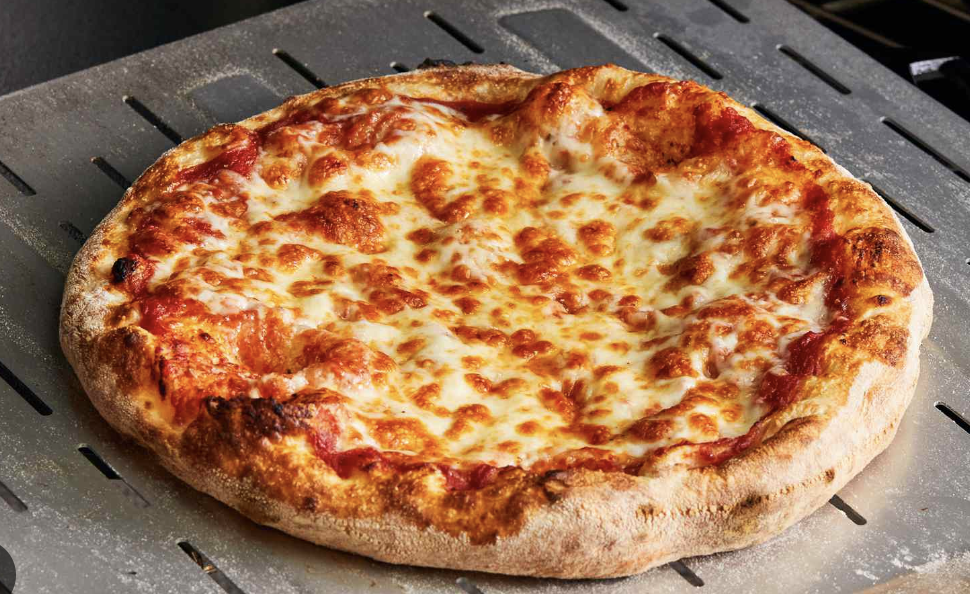

Pizza

Description
Pizza is a universally loved dish characterized by its thin or thick crust, topped with a variety of ingredients. The classic version features a tomato sauce base, mozzarella cheese, and various toppings such as pepperoni, vegetables, or seafood. Baked at high temperatures, pizza achieves a delightful balance of a crispy exterior and a soft, chewy interior. Its versatility allows for endless flavor combinations, making it a favorite for casual gatherings and gourmet dining alike. Whether enjoyed in a slice or a whole pie, pizza brings people together and satisfies a range of tastes.
Ingredients
For the dough:
- All-purpose flour - 2 ½ cups
- Active dry yeast - 1 packet (2 ¼ teaspoons)
- Olive oil - 2 tablespoons
- Salt and Sugar
For the sauce:
- Canned crushed tomatoes - 1 cup
- Garlic - 2 cloves, minced
- Olive oil - 1 tablespoon
- Dried oregano
For the toppings
- Mozzarella cheese - 2 cups, shredded
- Toppings of your choice (e.g., pepperoni, bell peppers, mushrooms, onions, olives, etc.)
- Fresh basil (optional) - for garnish
- Parmesan cheese (optional) - for servin
- Salt, pepper, Italian herbs (basil, oregano)
- In a small bowl, combine warm water, sugar, and yeast; let sit until frothy.
- In a mixing bowl, combine flour and salt, then add the yeast mixture and olive oil; mix and knead until smooth.
- Place the dough in a greased bowl, cover, and let it rise in a warm place for about 1 hour.
- In a saucepan, heat olive oil, sauté minced garlic, then add crushed tomatoes, oregano, salt, and pepper; simmer for 10-15 minutes.
- Preheat the oven to 475°F (245°C) and roll out the risen dough to desired thickness.
- Transfer the dough to a baking sheet or pizza stone, spread sauce, sprinkle mozzarella cheese, and add toppings.
- Bake for 12-15 minutes until the crust is golden and the cheese is bubbly.
- Let cool for a couple of minutes, garnish with fresh basil, and serve.